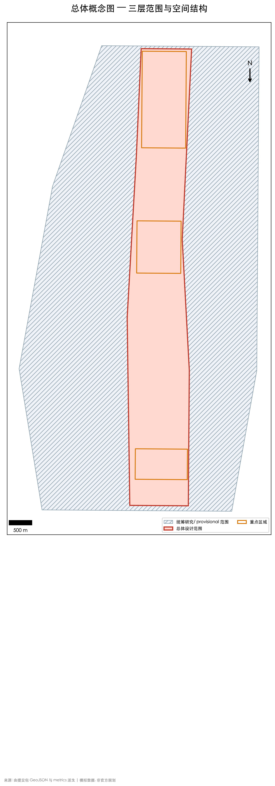
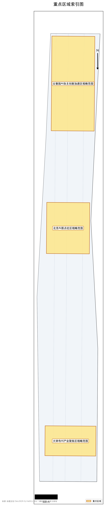
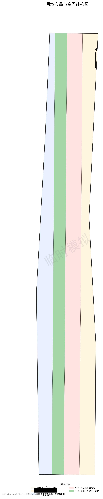
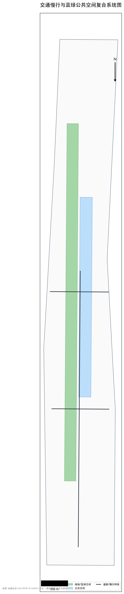
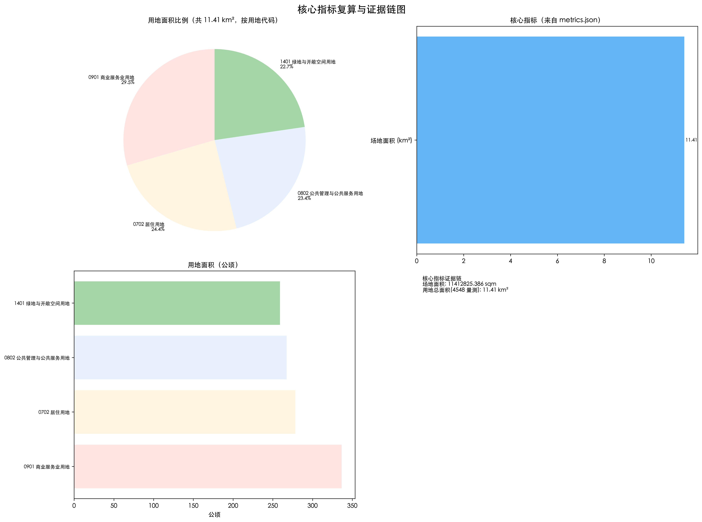

统筹研究、总体设计与重点区域三层空间框架的总体概念示意，底图数据来自 geometry/*.geojson（provisional boundary，EPSG:4548）。


四类用地分区覆盖总体设计范围，面积与 metric 复算一致（见 geometry/land_use.geojson）。

道路中心线与慢行廊道为方案级示意网络，表达重点区域间的慢行联系方向（见 geometry/roads.geojson；正式道路红线待官方数据）。
建筑基底表达更新与保留关系，高度与体量按控规条件待确认处理（见 geometry/buildings.geojson）。
更新项目清单 JZ-01 至 JZ-06（京张遗址公园慢行断点缝合、清河创新界面、原点社区成果转化街、大钟寺四象限步行连通、AI公共服务节点、全球AI活动周公共路线），详见 proposal.md 实施方案章节。
AI 场景卡、产业测试验证场景与用户画像（自主模型测试、标准制定工作坊、安全治理展示、低碳算力体验、开源社区、成果发布等），详见 proposal.md AI 创新生态章节。
公告 1.3、1.4、1.5 与 agent.1-agent.6 必选任务逐条映射至章节、图层、指标、图纸与自检项（见 compliance_matrix.json）。
确定性校验 PASS · 空间校验 PASS · 专业证据校验 PASS · 视觉校验（本页）。
场地边界与重点区域为 provisional，需在专业评分前替换为官方红线并复算全部指标（见 self_check.json 与 manifest.json known_blockers）。
A-CONTROLS-001/002：控规强度、红线、权属、市政与工程条件待专业确认；A-BOUNDARY-001：三层范围与重点区 polygon 均为 provisional（见 assumptions.json）。

来源: geometry/*.geojson 在 EPSG:4548 投影下计算 | AI 生成设计提案 | provisional boundary | 指标值与 metrics.json 一致